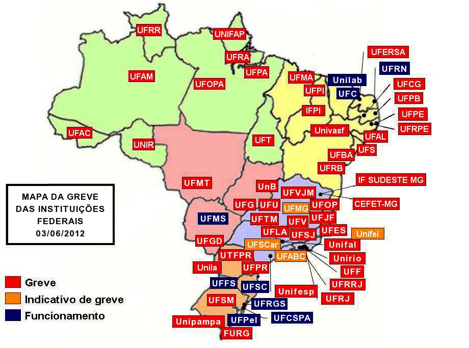

Greve pela Educação(){
7a edição:
Capa
Por: Guilherme Castilho Casassanta
Manifestação dos Docentes
A greve nas universidades federais iniciou formalmente no dia 17 de maio. Onde aproximadamente 40 universidades aderiram de imediato o movimento. Dentre os motivos da greve estão presentes:
1- Reestruturação da carreira;
2- Melhores condições de trabalho nas universidades;
3- Aumento da base salarial.
Durante o período de maio até agosto, o governo realizou assembleias e reuniões com os sindicatos dos professores tentando estabelecer um acordo. Medidas da proposta pelo governo, como um aumento de 15% no salário, divido em três anos, foram rejeitadas pelos sindicatos e a greve se manteve.
Juntamente à greve dos docentes das Universidades Federais, os técnicos das universidades entraram em greve, porém terminaram a greve na segunda-feira, dia 27 de agosto.
Atualmente, a greve continua com força, porém já se passaram quase 120 dias em greve, que é o limite garantido pelos direitos trabalhistas. Com o fim desse prazo, o governo pode intervir e os docentes correm o risco de ter seus pontos cortados.
Para os alunos, as consequências da greve são grandes. Principalmente devido à mudança do calendário, interrompendo o ciclo normal de aulas e férias. Para os formandos o prejuízo é ainda maior, prolongando a data de formatura dos discentes.

Universidades em greve
O fim da greve ainda é incerto. Algumas universidades como a UnB (Universidade de Brasília) encerraram a greve, enquanto muitas outras continuam mantendo forte o movimento. Porém as atividades das universidades estão aumentando e a frequência de reuniões internas sobre posicionamento sobre a greve está frequente, podendo algumas delas encerrar o movimento a qualquer momento.
Referências:
Greve nas Federais
Acordos com o Governo
Começo da Greve
}